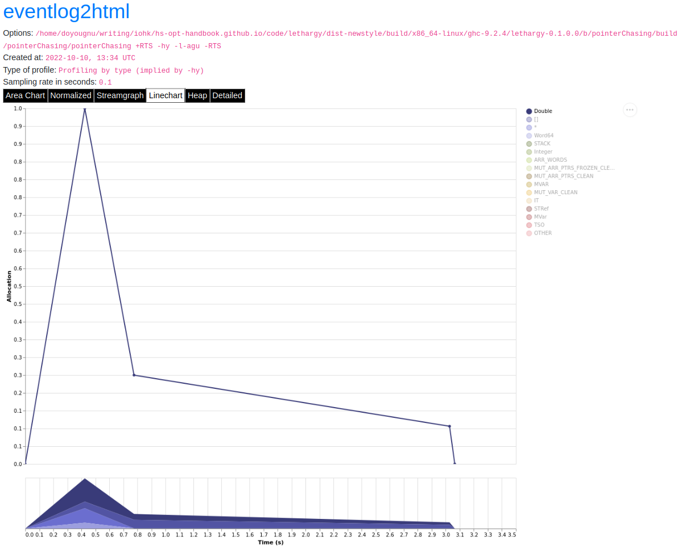
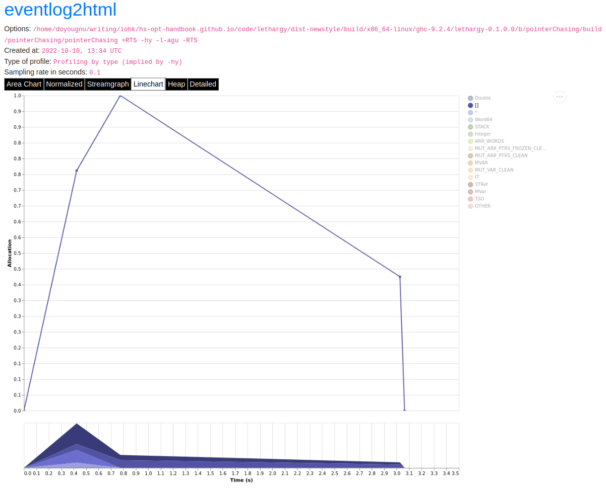
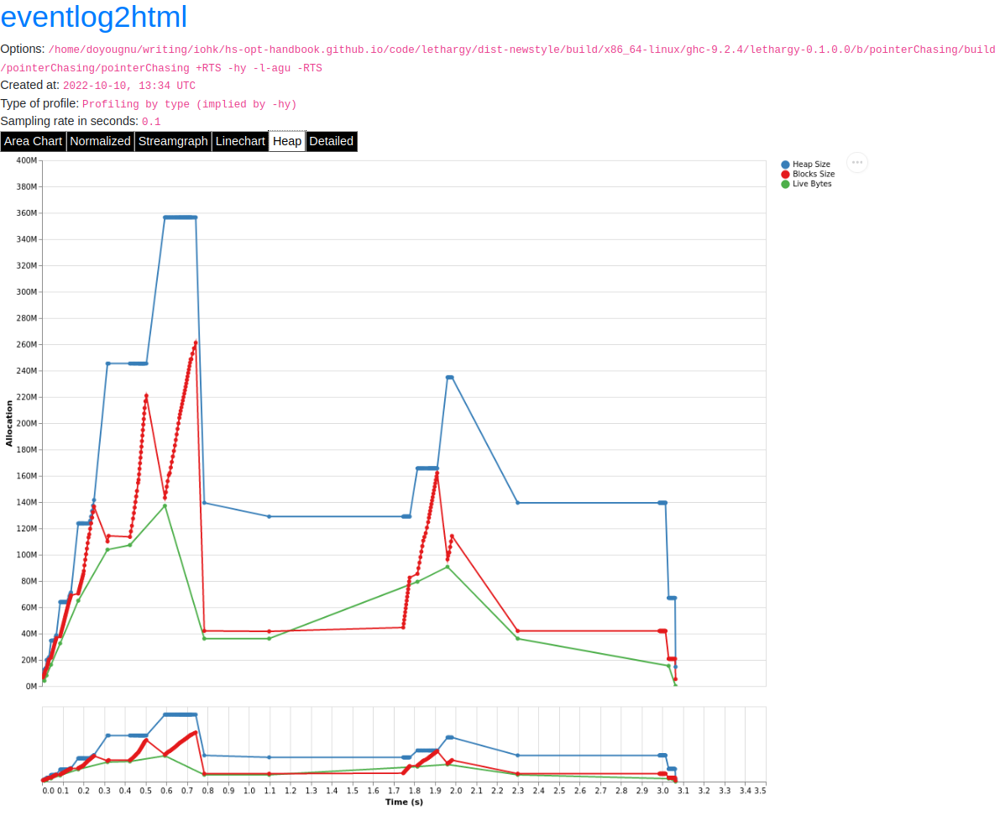
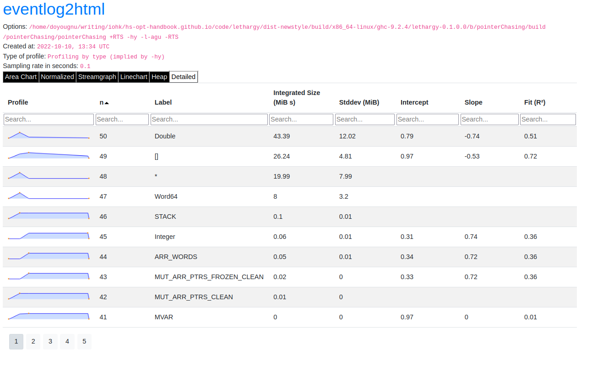
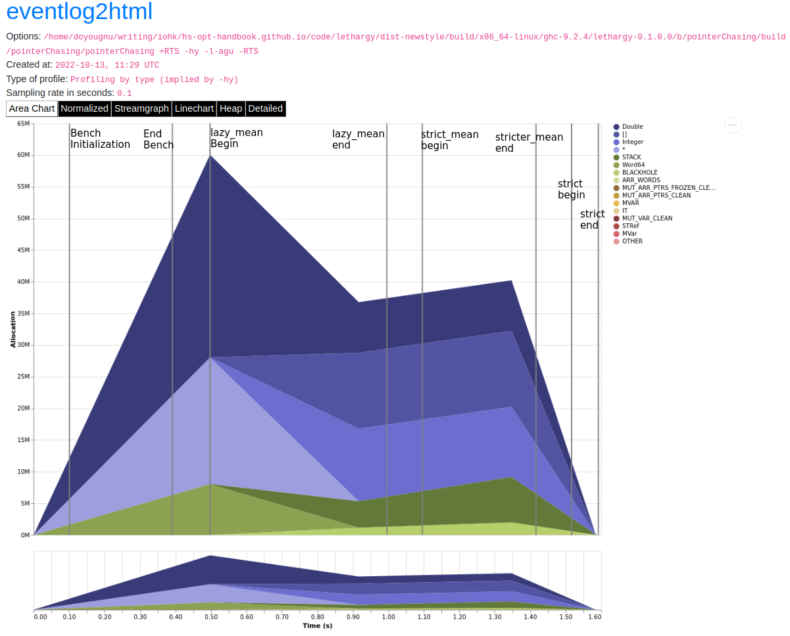

2.6.3. Eventlog¶
Eventlog is a GHC runtime system feature that logs events at runtime of a compiled program. It provides runtime information on the heap, the garbage collector, the scheduler, and arbitrary events that a user inserts into their own code. Eventlog is a versatile profiling tool, and should be one of the first tools in the profiling toolbox you reach for. Use eventlog when you are just beginning to diagnose the problem and are gathering data. Specifically when you want to inspect the heap or some other subsystem, such as the garbage collector. This chapter walks through using eventlog to inspect a small program that suffers from Excessive Pointer Chasing. By the end of the chapter you should understand:
What information can you retrieve by using eventlog.
When to use eventlog.
How to build your program to use eventlog.
How to visualize eventlog information.
How to tune eventlog to inspect specific sub-system.
How to tune eventlog to inspect specific pieces of code.
2.6.3.1. Requirements¶
The program must be recompiled with the
-eventlogGHC flagA program to consume the
<program>.eventlogfile. We recommend eventlog2html; see also the relevant section in the GHC User’s Guide. You can also parse the<program>.eventlogfile using the ghc-events library.
2.6.3.2. Restrictions¶
Eventlog is portable, and should work anywhere GHC’s native runtime system will work.
2.6.3.3. What Information Do I Receive From Eventlog?¶
Eventlog logs events as a function of elapsed walltime. A full list of possible events is available in GHC User’s Guide. In general, the most common use case is to track heap events; which will be the focus of this chapter. However, a user may define and track their own events using the base functions traceEvent.
2.6.3.4. When should I use Eventlog¶
Eventlog is most useful when you need to characterize the problem. It yields
runtime information on the specific sub-system the program relies on. Thus, it
allows you to drill down into the behavior of the garbage collector, the
scheduler, the heap and so. For example, using the flag +RTS -lg you can
collect the CONC_MARK_BEGIN and CONC_MARK_END events which log the
beginning and end of the concurrent garbage collectors marking phase. Similarly,
you can collect MEM_RETURN which provides information about the current
allocation of megablocks, attempts to return them to the operating system, and
heap fragmentation.
2.6.3.5. The Running Example¶
We’ll use a toy program to demonstrate heap profiling with eventlog. Our toy program is an example of excessive pointer chasing and should be familiar to most Haskellers’ as a traditional example of a memory leak:
{-# LANGUAGE BangPatterns #-}
-- Need to disable optimizations because GHC will recognize and perform
-- let-floating for us!
{-# OPTIONS_GHC -O0 -ddump-simpl -ddump-to-file -ddump-stg-final #-}
module Main where
import Data.List (foldl')
import System.Random (mkStdGen)
import System.Random.Stateful (newIOGenM, uniformRM)
import Control.Concurrent (threadDelay)
import Control.Monad (replicateM)
lazy_mean :: [Double] -> Double
lazy_mean xs = s / fromIntegral ln
where (s, ln) = foldl step (0,0) xs
step (s, ln) a = (s + a, ln + 1)
stricter_mean :: [Double] -> Double
stricter_mean xs = s / fromIntegral ln
where (s, ln) = foldl' step (0,0) xs
step (s, ln) a = (s + a, ln + 1)
strict_mean :: [Double] -> Double
strict_mean xs = s / fromIntegral ln
where (s, ln) = foldl' step (0,0) xs
step (!s, !ln) a = (s + a, ln + 1)
main :: IO ()
main = do
-- generate random test data
seed <- newIOGenM (mkStdGen 1729)
test_values <- replicateM 500000 $ uniformRM (0,500000) seed
-- sleep for a second
let wait = threadDelay 1000000
-- now run
print $! lazy_mean test_values
wait
print $! stricter_mean test_values
wait
print $! strict_mean test_values
We define three functions, each of which calculate a geometric mean from a list
of Doubles. lazy_mean uses a lazy left fold, stricter_mean uses a strict
left fold but will still leak memory because foldl' evaluates the result of
step to WHNF. step returns a tuple whose WHNF is a tuple
constructor. Thus, stricter_mean will leak memory because the elements of
the tuple are still lazy. strict_mean fixes this by adding bang patterns
inside the tuple, thereby forcing the elements to evaluate to WHNF; which is
just a value for Double.
GHC is good at spotting such code patterns so we’ve turned off optimizations
with the OPTIONS_GHC -O0 pragma.
2.6.3.6. The Setup¶
Using Eventlog requires three pieces of setup. First, you must build your
programs with the -eventlog -rtsopts -prof GHC flags (or alternatively set
profiling: True in cabal.project or enable library-profiling and
executable-profiling in stack.yaml.). For example:
benchmark pointerChasing
type : exitcode-stdio-1.0
default-language: Haskell2010
ghc-options : -fforce-recomp -threaded -rtsopts -prof -eventlog
build-depends: base >= 4.15
, containers
, deepseq
, gauge
, random
hs-source-dirs: bench/PointerChasing
main-is: Main.hs
Second, you must pass the RTS flag -l to your program and additional RTS
flags that describe which events to track. Lastly, you must pass RTS flags to
describe the kind of heap information to collect. Here are some examples of RTS
flag combinations:
<program> +RTS -hy -l-agu -RTS: Do not track all possible events (-a), but track all garbage collector events (g), all user events (u), and produce a heap profile by type (-hy).<program> +RTS -hr -la -RTS: Trace all possible events (a) and produce a heap profile by retainer (-hr).<program> +RTS -hb -l-asu -RTS: Do not track all possible events (-a), but track all scheduler events (s), all user events (u), and produce a heap profile by biography (-hb).
2.6.3.7. Visualizing the Heap: Eventlog by Type¶
To view the heap profile we’ll use eventlog2html. To begin we’ll inspect the heap by type. Our initial goal is to determine if we have a memory leak and if so which type is leaking. Here is the cabal file entry and invocation:
Note
For subsequent runs, we will elide the complete output
$ cabal bench pointerChasing --benchmark-options='+RTS -hy -l-agu -RTS'
Build profile: -w ghc-9.2.4 -O1
In order, the following will be built (use -v for more details):
- lethargy-0.1.0.0 (bench:pointerChasing) (first run)
Preprocessing benchmark 'pointerChasing' for lethargy-0.1.0.0..
Building benchmark 'pointerChasing' for lethargy-0.1.0.0..
[1 of 1] Compiling Main ( bench/PointerChasing/Main.hs, /home/doyougnu/writing/iohk/hs-opt-handbook.github.io/code/lethargy/dist-newstyle/build/x86_64-linux/ghc-9.2.4/lethargy-0.1.0.0/b/pointerChasing/build/pointerChasing/pointerChasing-tmp/Main.o )
[1 of 1] Compiling Main ( bench/PointerChasing/Main.hs, /home/doyougnu/writing/iohk/hs-opt-handbook.github.io/code/lethargy/dist-newstyle/build/x86_64-linux/ghc-9.2.4/lethargy-0.1.0.0/b/pointerChasing/build/pointerChasing/pointerChasing-tmp/Main.o )
Linking /home/doyougnu/writing/iohk/hs-opt-handbook.github.io/code/lethargy/dist-newstyle/build/x86_64-linux/ghc-9.2.4/lethargy-0.1.0.0/b/pointerChasing/build/pointerChasing/pointerChasing ...
Running 1 benchmarks...
Benchmark pointerChasing: RUNNING...
250137.43193906464
250137.43193906464
250137.43193906464
Benchmark pointerChasing: FINISH
$ eventlog2html pointerChasing.eventlog
$ firefox pointerChasing.eventlog.html
We ask cabal to run the benchmark, and generate an eventlog of only (-a) user (u) and GC (g) events with a heap profile by type (-hy); which yields the following heap profile:
Note
The heap profile is not a static image! Try clicking through the interactive output from eventlog2html along with the text.
The heap profile is similar to profiles generated by traditional tools with some notable exceptions. First, this is a more interactive plot; for example, you can hover your mouse over a section of the profile and a popup will describe the corresponding description from the legend. You can also select an element on the legend to filter the plot to only that element. Second, eventlog2html produces more plots than just the area chart. It produces a normalized area chart, a streamgraph, a linechart, a heap breakdown by size of allocations (not count), and a detailed heap breakdown by every element in the legend.
Each chart serves different purposes and are useful; to show a particular chart, click its name in the black bar above the main plot area.
The normalized area chart shows the portion of allocations by type. This
makes it easy to see that after 0.8 seconds ~60% of allocations are of type
[]. Use the normalized area chart to view the composition of the heap at a
given time.
The streamgraph is similar to the normalized area chart, except that streamgraph’s show the evolution of allocations by a breakdown, such as type, by time.
From the streamgraph we can easily see that in the first 0.8 seconds our toy
program allocates a lot of Double, then after 0.8 seconds Double
decreases and most of the heap is []. You should use the streamgraph when
you want to view how a particular element in the heap changes over time.
The normalized linechart shows a breakdown of what is increasing over time.
The linecharts are noisy, fortunately we can filter to see exactly what type of
data on the heap is increasing over time. For example, here is a snapshot of the
streamgraph where I’ve filtered for Double:
{kind=link}

Notice the triangular shape that smooths out. Here is the same plot only
filtered for []:
{kind=link}

Notice the roughly triangular shape. Recall that these linecharts are
normalized so we are not getting a raw portion of allocations on the heap,
rather the chart displays what portion of the heap is composed of each type.
This makes it easy to see that we actually have two memory leaks: one for
Double and one for []. Both types show a triangular profile shape which
is a classic indication of a memory leak. It occurs because lazy_mean builds
up a lot of thunks; increasing allocations on the heap and producing the rising
edge, the program reaches a point where the thunks must be evaluated; producing
the top of the triangle, and then begins evaluating them thus decreasing the
allocations on the heap and yielding the descending edge. We could have observed
this pattern in the other plots, but the normalized linechart directly shows it.
Use the linechart when you want to view the composition of the heap by element
over time.
The heap plot shows the total heap size and the block and live bytes size over time. It is useful to see the total size of the heap at a particular time. We present it here for our toy program but don’t comment on it further:
{kind=link}

The last kind of information generated by eventlog2html, the detailed view, is one of the most useful visualizations. Here is the detailed view for the toy program:
{kind=link}

The detailed view is a searchable table of the heap profile showing exactly the total allocations attributable to the element (in this case the type), and extra statistical information. You should use the detailed heap breakdown to inspect a particular element of the heap profile that you might already suspect and therefore can search. For our toy example, the detailed view is not that useful because we can clearly see the culprits from the other views. However for a complicated heap profile with numerous kinds of heap objects, the detailed view provides an easy way to search and inspect a particular heap object which may be buried in noise.
2.6.3.8. Adding Our Own Events¶
Thus far we have seen memory leaks coming from the types Double and [],
but we have not yet distinguished in the profile between lazy_mean,
stricter_mean, and strict_mean. Consider these functions as different
phases of the toy program; it would be useful to have an indicator in the heap
profile that delineates between such phases. For example, such a marker would
allow us to say “Ah! Phase foo does excessive allocation due to leaking
Double”. This is the purpose of traceMarker and traceMarkerIO in
Debug.Trace in the base library. Both functions allow us to emit a custom
marker to the eventlog which will then be rendered by eventlog2html. We’ll
demonstrate both traceMarker in our functions and traceMarkerIO in the
main function. Furthermore, we’ll add some more wait statements to avoid a
collisions between markers and the y-axis. Here is the marker version of the toy
program:
module Main where
import Data.List (foldl')
import System.Random (mkStdGen)
import System.Random.Stateful (newIOGenM, uniformRM)
import Control.Concurrent (threadDelay)
import Control.Monad (replicateM)
import Control.DeepSeq (force)
import Debug.Trace (traceMarker, traceMarkerIO)
lazy_mean :: [Double] -> Double
lazy_mean xs = traceMarker "Begin: lazy_mean" $ s / fromIntegral ln
where (s, ln) = foldl step (0,0) xs
step (s, ln) a = (s + a, ln + 1)
stricter_mean :: [Double] -> Double
stricter_mean xs = traceMarker "Begin: stricter_mean" $ s / fromIntegral ln
where (s, ln) = foldl' step (0,0) xs
step (s, ln) a = (s + a, ln + 1)
strict_mean :: [Double] -> Double
strict_mean xs = traceMarker "Begin: strict_mean" $ s / fromIntegral ln
where (s, ln) = foldl' step (0,0) xs
step (!s, !ln) a = (s + a, ln + 1)
main :: IO ()
main = do
let wait = threadDelay 100000
-- create a delay at the beginning of the program, if we don't do this then
-- our marker will be merged with the y-axis of the heap profile
wait
traceMarkerIO "Bench Initialization"
-- generate random test data
seed <- newIOGenM (mkStdGen 1729)
test_values <- replicateM 500000 $ uniformRM (0,500000) seed
traceMarkerIO "End Bench Initialization"
wait
-- now run
print $! lazy_mean test_values
traceMarkerIO "End lazy_mean"
wait
print $! stricter_mean test_values
traceMarkerIO "End stricter_mean"
wait
print $! strict_mean test_values
traceMarkerIO "End strict_mean"
We add markers in two areas: in the beginning of each function and after each function call in main including the benchmark setup. Now let’s view the heap profile:
The gray lines that have been added to the profile are our markers. The
String input to traceMarker and traceMarkerIO is visible by hovering
the mouse over the marker. Here is a snapshot where I’ve manually added the
labels to how the popups statically:
{kind=link}

We can make several important observations from this profile:
First, we can observe the difference in runtime between these functions by
comparing the horizontal space between the “Begin” and “End” markers. For
example, notice how close the begin and end markers are for strict_mean
compared to lazy_mean. From the x-axis we can see that strict_mean
finishes in about 0.1 seconds, while lazy_mean finishes in about 0.3
seconds.
Second, the ascending side of the first memory leak (the first triangle) comes
surprisingly from the benchmark setup, because the marker occurs before the peak
of the triangle. We should expect some allocation at the beginning of our
program (we need to have data to operate on after all!), but the heap should
flatten out (because the test data finishes allocation) until lazy_mean is
called.
Third, after the call to lazy_mean allocations decrease. This is further
evidence of a memory leak in the benchmark setup. If we had all values from
test_values fully evaluated and in memory when lazy_mean was first
called, then we would expect heap allocations to increase because we know that
lazy_mean is leaky. However, we observe the opposite; lazy_mean
reduces allocations until the heap levels out around 0.90 seconds and ~37M
allocations right before lazy_mean ends. The point at which the allocations
level out, is the point when lazy_mean finishes consuming thunks introduced
by the benchmark setup and finally performs the arithmetic computation. Thus, we
can conclude three things: First, a strict benchmark setup should allocate ~37M
on the heap, because this is the amount of allocations after lazy_mean has
consumed all the thunks; Second, the actual wall time for a strict lazy_mean
should be around 0.1 seconds because this is the duration of time between the
point at which lazy_mean has consumed all the thunks and when lazy_mean
ends. Third, notice that a known-leaky function did not appear to be leaky
because of another memory leak effectively hid it. This tells us that the memory
leak in lazy_mean is not comparable to the leak in the benchmark sweet. For
if it were comparable then we would have observed a rising edge after the
lazy_mean begin marker.
Let’s fix the benchmark setup memory leak by forcing strict IO with evaluate
and force from Control.Exception and Control.DeepSeq respectively. A
simple one line change in main:
module Main where
import Data.List (foldl')
import System.Random (mkStdGen)
import System.Random.Stateful (newIOGenM, uniformRM)
import Control.Concurrent (threadDelay)
import Control.Monad (replicateM)
import Control.Exception (evaluate) -- new
import Control.DeepSeq (force)
import Debug.Trace (traceMarker, traceMarkerIO)
-- ... --
main :: IO ()
main = do
let wait = threadDelay 100000
-- create a delay at the beginning of the program, if we don't do this then
-- our marker will be merged with the y-axis of the heap profile
wait
traceMarkerIO "Bench Initialization"
-- generate random test data
seed <- newIOGenM (mkStdGen 1729)
test_values <- fmap force (replicateM 500000 $ uniformRM (0,500000) seed) -- new
>>= evaluate
traceMarkerIO "End Bench Initialization"
wait
-- now run
print $! lazy_mean test_values
traceMarkerIO "End lazy_mean"
wait
print $! stricter_mean test_values
traceMarkerIO "End stricter_mean"
wait
print $! strict_mean test_values
traceMarkerIO "End strict_mean"
which produces:
No difference! The only remaining source of possible thunks in test_values
is uniformRM and the generation of seed. So we’ll remove any possible
lazy IO from that call:
main :: IO ()
main = do
let wait = threadDelay 100000
-- create a delay at the beginning of the program, if we don't do this then
-- our marker will be merged with the y-axis of the heap profile
wait
traceMarkerIO "Bench Initialization"
-- generate random test data
!seed <- newIOGenM (mkStdGen 1729) -- new
let genValue = fmap force uniformRM (0,500000) seed >>= evaluate -- new
test_values <- replicateM 50000 genValue >>= evaluate . force -- new
traceMarkerIO "End Bench Initialization"
wait
-- now run
print $! lazy_mean test_values
traceMarkerIO "End lazy_mean"
wait
print $! stricter_mean test_values
traceMarkerIO "End stricter_mean"
wait
print $! strict_mean test_values
traceMarkerIO "End strict_mean"
which produces an empty heap profile!:
The profile is empty because our sampling rate is too low now that we’ve removed
those thunks. Let’s sample 100x more frequently by setting the -i RTS flag.
The invocation now becomes:
$ cabal bench pointerChasing --benchmark-options='+RTS -hy -l-agu -i0.001
-RTS'; eventlog2html pointerChasing.eventlog && firefox pointerChasing.eventlog.html
and produces this heap profile:
Much better! There are several things to point out. The y-axis has reduced to
~7M maximum, and the x-axis has also reduced from 1.8 seconds to 0.9 seconds. We
can clearly see the memory leaks from lazy and stricter now. In fact,
lazy has a total of three memory leaks, and stricter has two. Because
our program is relatively simple, there are not many sites where these leaks
could originate. We’ll focus on stricter_mean and add markers to the source
of the remaining leaks. We’ll also remove lazy_mean but keep strict_mean
for comparison . Here is stricter_mean reproduced to refresh your memory:
stricter_mean :: [Double] -> Double
stricter_mean xs = traceMarker "Begin: stricter_mean" $ s / fromIntegral ln
where (s, ln) = foldl' step (0,0) xs
step (s, ln) a = (s + a, ln + 1)
We observed two leaks. We know that the fold should produce one leak because
foldl' evaluates the accumulator to weak head normal form, and the step
function does not evaluate the values inside its input (,), thus
accumulating thunks in the elements of the tuple. Let’s add markers to verify
this behavior:
stricter_mean :: [Double] -> Double
stricter_mean xs = (traceMarker "s" s) / fromIntegral (traceMarker "ln" ln)
where (s, ln) = foldl' step (0,0) xs
step (s, ln) a = (s + a, ln + 1)
which yields:
Now we can see that the call to ln reduces a lot of the heap. Let’s make
ln strict in step and observe the difference in the heap profile:
stricter_mean :: [Double] -> Double
stricter_mean xs = (traceMarker "s" s) / fromIntegral (traceMarker "ln" ln)
where (s, ln) = foldl' step (0,0) xs
step (s, !ln) a = (s + a, ln + 1)
and now we have:
Notice the y-axis has further reduced and that the marker for ln has
disappeared. The marker is still in the profile (you can check the eventlog
file), but because ln doesn’t force any thunks the marker is shadowed by the
end stricter_mean marker. We still have a leak after s, but this was
expected. Let’s make sure this is coming from s by making s strict:
stricter_mean :: [Double] -> Double
stricter_mean xs = (traceMarker "s" s) / fromIntegral (traceMarker "ln" ln)
where (s, ln) = foldl' step (0,0) xs
step (!s, !ln) a = (s + a, ln + 1)
which yields:
stricter_mean still doesn’t run in constant heap as the heap decreases
during and after calling it, but it is difficult to see exactly what is
decreasing. This situation is exactly why the detailed heap view is useful.
Checking the detailed view of the latest profile shows Double and [] to
be constant, but shows * decreasing. * is the symbol the heap profiler
emits for closures that have an unknown type. But the toy program is completely
monomorphic and has known types, so where do we have an unknown type? The only
code in the toy program that doesn’t have a precise type is in the benchmark
setup, and specifically this line:
...
seed <- newIOGenM (mkStdGen 1729)
...
where newIOGenM returns a polymorphic type that is implemented as an
IORef, that is, a value the profiler doesn’t have access to! Thus, forcing
this value should remove the memory leak. Our final main is:
main :: IO ()
main = do
let wait = threadDelay 100000
-- create a delay at the beginning of the program, if we don't do this then
-- our marker will be merged with the y-axis of the heap profile
wait
traceMarkerIO "Bench Initialization"
-- generate random test data
!seed <- newIOGenM (mkStdGen 1729) -- new
let genValue = fmap force uniformRM (0,500000) seed >>= evaluate
test_values <- replicateM 50000 genValue >>= evaluate . force
traceMarkerIO "End Bench Initialization"
wait
traceMarkerIO "Begin stricter_mean"
print $! stricter_mean test_values
traceMarkerIO "End stricter_mean"
wait
print $! strict_mean test_values
traceMarkerIO "End strict_mean"
which produces the final heap profile:
We could further investigate but our heap is now constant across
stricter_mean validating the lazy tuple hypothesis.
2.6.3.9. Summary¶
In sum, we’ve demonstrated heap profiling using GHC’s eventlog and
eventlog2html. Eventlog records event specific data produced by GHC as a
function of walltime. One can embed and emit custom events using the functions
traceEvent and traceEventIO, and add runtime markers to the eventlog
with traceMarker and traceMarkerIO in base. These functions and the
better visualizations of eventlog2html make eventlog a powerful tool when
investigating the runtime behavior of a program. In particular when finding,
fixing, and debugging memory leaks or when correlating heap information to a
particular function or phase of the program.
2.6.3.10. References and Further Reading¶
The eventlog section in the GHC User’s Guide.
The eventlog2html home page.